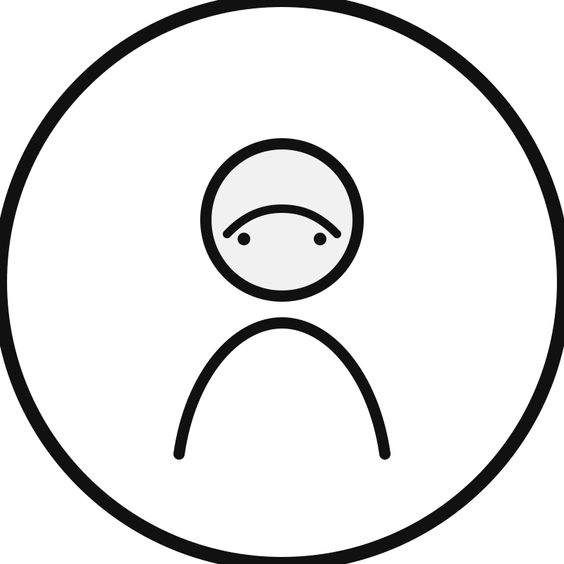

Data engineering
Characterizing datasets, shaping pipelines, and preparing data for analysis, experimentation, and deployment.
University of Southern Denmark
We focus on approaches for big data and artificial intelligence that help build intelligent systems, from early ideas to scalable systems.
About
The lab brings together data engineering and applied AI to support real-world systems. The goal is not only to make a model work, but to build the surrounding data pipeline, evaluation practice, and operational setup that make the result useful.
This starter site keeps the structure close to the reference page while leaving space for later content such as project pages, publications, and lab news.
Research
Characterizing datasets, shaping pipelines, and preparing data for analysis, experimentation, and deployment.
Designing systems that use machine learning and AI to support tasks, decisions, and workflows in practice.
Turning ideas into working prototypes that can be evaluated with real users, data, and constraints.
Measuring what changes, what holds up, and what fails when methods are tested on actual problems.
Services
Clarify opportunities, constraints, and data readiness before building.
Assess methods, tools, and architectural options with an expert view.
Prototype data intelligence workflows and pipelines for real applications.
Run experiments and evaluations that tie results to actual evidence.
Outputs
A short summary page for the lab's scope, priorities, and current themes.
A curated list of papers, reports, and workshop contributions.
Project highlights, prototype links, and visual examples once they are ready.
People

Join
This layout is ready for a future join page, supervision details, and calls for students or industry partners.
Replace the placeholders with real lab photos, logos, and news items when you are ready.
Contact
The site is structured for GitHub Pages, so once the repository exists you only need to push the files and enable Pages in the repo settings.
If you want, I can next help you with the exact repository name, the GitHub Pages settings, and the collaborator setup.